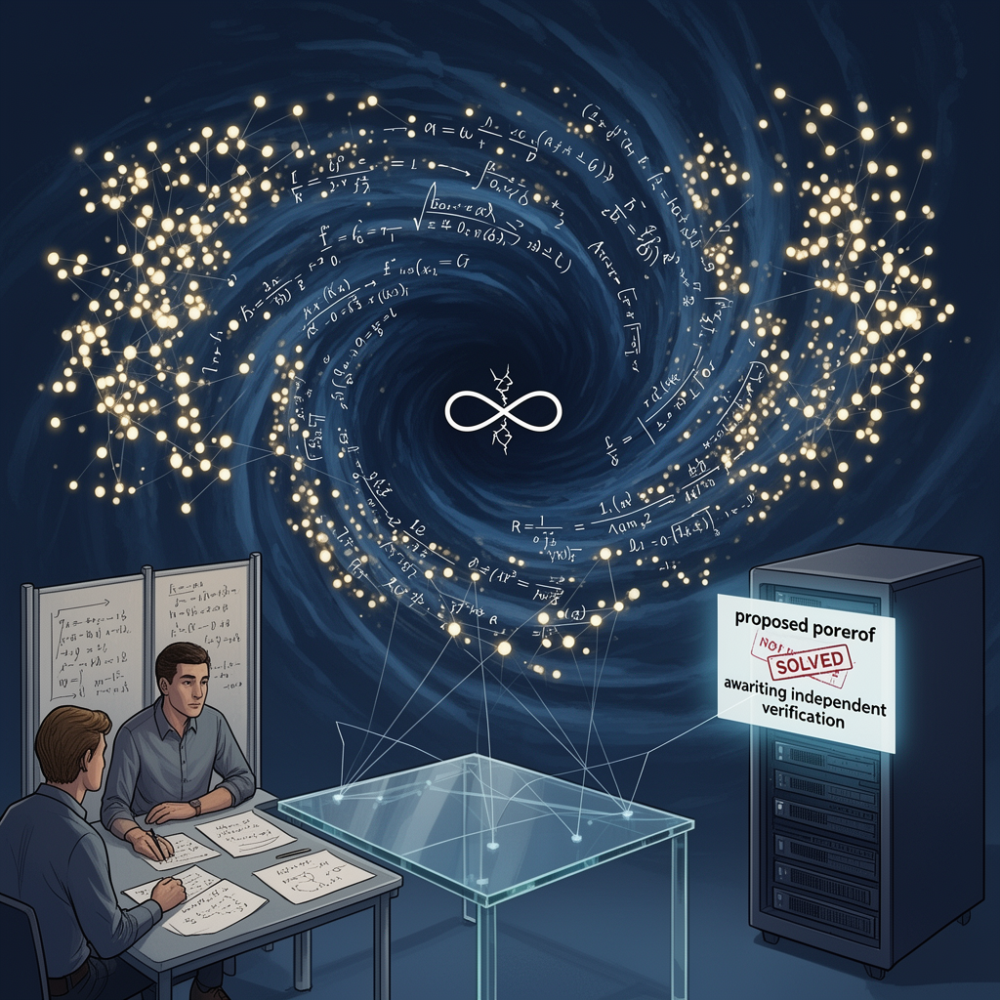

AI Panorama · fly through the GPT-5.6 Terra edition
This page was written entirely by GPT-5.6 Terra (OpenAI), as one of the magazine's editions - eight AI models each wrote their own version of every story from the same frozen sources.
The same story in other editions: Claude Sonnet 5 Gemini 3.7 Flash Grok 4.6 DeepSeek V4 Pro GLM 5.3 Qwen 3.8 Max Kimi K2.6
OpenAI says 10,000 AI agents produced a partial Navier–Stokes result, but the claim is unverified and contested.

OpenAI says a new, unreleased AI system has made a major advance on the Navier–Stokes existence and smoothness problem, a nearly century-old question about the equations used to describe moving fluids. The company says it set roughly 10,000 **AI agents**—systems able to pursue tasks with some autonomy—on the problem and obtained its result in 88 hours.
That is not yet the same as settling the problem. The result has not been independently verified or accepted by the Clay Mathematics Institute, the body that administers the Millennium Prize Problems. Nor do the sources agree on how complete OpenAI’s result is: OpenAI told the BBC that it had resolved two of the four statements demanded in the prize formulation, while other coverage described the company as releasing a full proof. Until mathematicians inspect the work, the sensible description is a substantial claim rather than an established solution.
## A question about fluids—and mathematical breakdown
The Navier–Stokes equations describe the movement of fluids such as air and water. They are widely used in fluid mechanics, but their most difficult theoretical question remains open: starting from reasonable conditions in three dimensions, do the equations always continue to give a well-behaved answer, or can the solution develop an impossible infinity?
OpenAI says its proof supports the second possibility. Under particular conditions, it says, fluid speed can “blow up”: a mathematical description reaches an infinite value rather than remaining smooth. A proof either way would clarify a deep limit in equations used to model turbulent flow, the disorderly motion familiar in smoke, storms and wakes behind vehicles.
The computational scale was extreme. The BBC reports that the agents exchanged nearly 3 million messages and generated 130 billion output tokens on Navier–Stokes alone. TechCrunch reports 300 billion output tokens across the company’s week-long push on several unsolved problems. OpenAI said its latest public model, GPT-6 Astra, took about 17 hours to verify the proposed solution; the system that found it is internal and, according to the company, more capable.
Those figures should not be mistaken for a measure of mathematical truth. A proof earns confidence because other experts can read it, identify every assumption and check every logical step—not because the system that proposed it used a great deal of computation. But if the work survives that process, it would be evidence that AI can do more than help mathematicians with calculations or code: it may be able to search productively for new arguments.
## A dispute over who knew what
The announcement arrived alongside a serious allegation from Tristan Buckmaster, a mathematics professor at New York University. Buckmaster and Levent Alpöge, a mathematician employed by Anthropic, had been working on related results using OpenAI’s Codex and Anthropic’s Claude. Buckmaster said that information about their progress was passed to OpenAI before their work was public, and that OpenAI only began its Navier–Stokes effort after receiving that information.
He did not accuse the company of using their data. In a statement quoted by the Guardian, he said he did not know what OpenAI’s model had done or whether the pair’s data had been used. His concern is more precise: the two researchers had chosen a relatively uncommon route to the problem, and he found it suspicious that OpenAI appeared to pursue the same route at the same moment.
OpenAI disputes the central allegation. It says neither its researchers nor its agents saw the pair’s work by any means before public release, and says no specific user data was accessed for its research. The company does concede one uncertainty: it cannot rule out that de-identified data from the researchers’ use of its products helped improve its models. It also says its proof differs significantly from the other researchers’ work, including in the precise result considered in a related Euler-equation case.
This is not a minor question of credit. Research notes entered into an AI service can create an awkward boundary between private work, product data and model training. Buckmaster’s account also raises a familiar imbalance: a small academic collaboration can be overtaken by a company able to direct thousands of agents and enormous computing resources at a promising lead.
## What comes next
OpenAI says it does not intend to seek the Millennium Prize’s $1m award. That decision does not settle whether its work meets the prize standard. The next meaningful test is independent mathematical scrutiny, including whether the claimed proof addresses all of Clay’s requirements.
For now, the story is both a striking report of AI-assisted mathematical discovery and a reminder that discovery has social rules as well as technical ones. An argument can be novel, correct and useful only after it is open enough for others to examine. The same openness is needed to resolve how much human work, if any, helped point the machines toward it.
Navier–Stokes equationsAI agentMathematical proofTokens
openaiai-agentsai-modelsmodel-evaluationai-governance